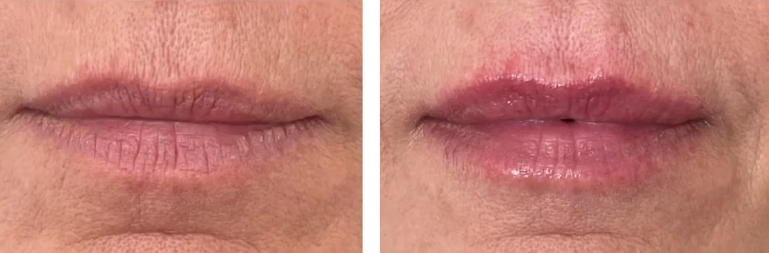

Thin Lips
How to Treat Them?
If you are interested in us helping you with this topic:
Book Your Initial Consultation Now!If you are interested in us helping you with this topic:
Book Your Initial Consultation Now!Thin lips can be an aesthetic concern for many people, especially as we age or lose volume in that area. This condition can make the mouth look less defined and affect facial harmony. At our Aesthetic Center, we offer various treatments that can help you recover volume and definition in your lips, restoring a youthful and balanced appearance.

At our Aesthetic Center, we offer different options to improve the appearance of thin lips, naturally and with lasting results. Some of the most recommended treatments are:
Yes, with aging and other factors like sun exposure or smoking, lips tend to become thinner over time. If not treated, this volume loss can accentuate. Treatments like hyaluronic acid fillers or facial radiofrequency can prevent further deterioration and improve lip appearance.
Treatment results vary according to the type of technique and individual needs of each patient. In general, you can expect fuller and well-defined lips. Treatments like hyaluronic acid fillers provide immediate results, while options like Sculptra or PRP offer gradual and long-lasting improvement. At our Aesthetic Center, we design a personalized plan to achieve the best possible results.
